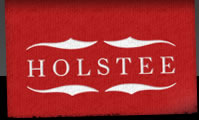
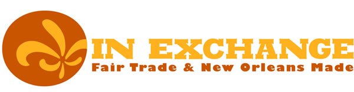
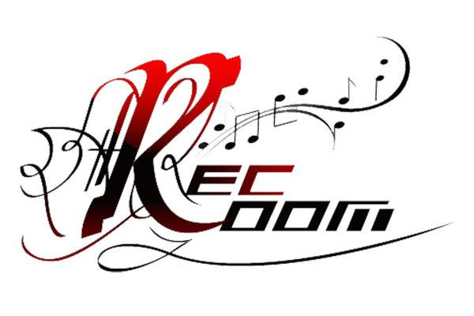

Holstee LLC:
Holstee LLC is an eco-friendly, socially driven clothing company that makes 100% of their functional and stylish products out of out of recycled materials. 10% of all Holstee's proceeds are lent to entreprenurs in poverty-stricken countries through micro-loans.
IN Exchange:
IN Exchange is a 501(c)3 not-for-profit fair trade store, located on the Tulane University campus in New Orleans, LA. IN Exchange partners with artists to develop fair economic opportunities and educates students on fair trade and social responsibility.
RecRoom Music Studio:
RecRoom Music Studio is a music production studio specializing in hip-hop and popular music located in Hartford, CT.
Trees on Fire:
Trees on Fire is an eco-band out of Virginia that has taken environmental action through its music. The band has raised awareness for the Sierra Club, Appalachian Voices, Atchafalaya Basinkeeper, Building Goodness Foundation, Climate Ride and the Chesapeake Climate Action Network.
In addition, The Law Office of John M. Trani represents various individual musicians, groups, producers, performers, models, writers and visual artists.